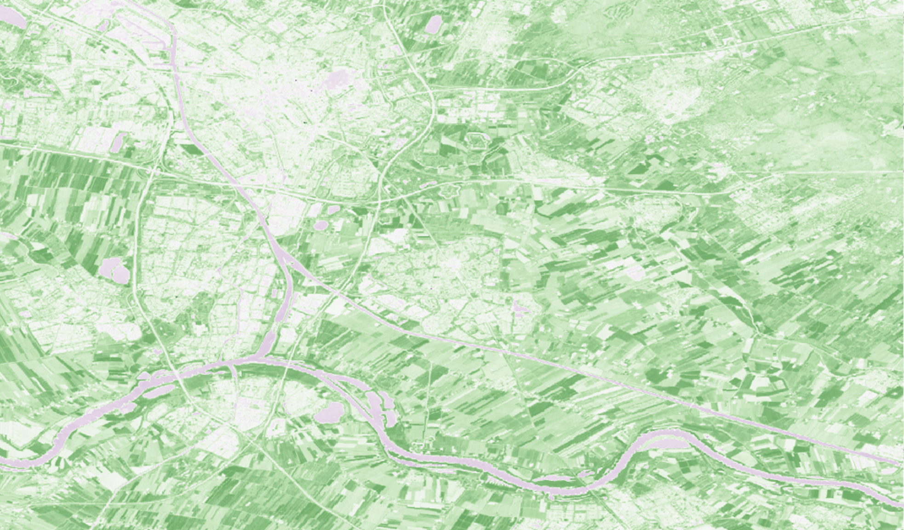

Land Cover Classification
Land cover classification is crucial for various fields, including environmental monitoring, climate change studies, and agricultural planning. It helps track changes like deforestation and urbanisation, which is essential for managing natural resources and protecting ecosystems. In agriculture, it identifies and monitors crop health, ensuring food security and sustainable practices. Urban planners use it for infrastructure design, growth management, and environmental impact mitigation. It also supports biodiversity conservation by identifying habitats and guiding conservation efforts. Additionally, it aids in disaster management by assessing risk areas, water resource management by understanding watershed characteristics, and policy-making by providing data for land use and environmental protection strategies.
Unsupervised Pixel-Based
I selected the city of Utrecht to analyse and classify land cover using various methods. The first method was unsupervised pixel-based classification, which clusters individual pixels based on spectral information. This method is quick to implement, making it suitable for initial analysis. However, it is susceptible to noise and misclassification, similar to object-based methods, due to its reliance on pixel-level data rather than considering the broader spatial context.
Unsupervised Object-Based
The second method is unsupervised object-based classification, which segments images into objects and clusters them into classes without predefined labels. This approach effectively captures spatial relationships between objects, providing a more contextual understanding of land cover. However, it requires supervision and verification to ensure the accuracy of the classification, as the automated process may still result in errors.

Supervised Pixel-Based
Conversely, supervised pixel-based classification involves using labeled training data to classify pixels. In this method, I selected specific areas and labeled them with the correct land cover type. Green is forest areas, yellow is agricultural areas, grey is urban areas, and blue is water bodies. This approach offers high accuracy but relies heavily on the quality of the trained data, as accurate classification depends on providing the correct information for the algorithm to learn from.
NDVI
NDVI (Normalized Difference Vegetation Index) evaluates vegetation health by comparing reflectance in the red and near-infrared bands. It measures the difference to assess how much light is absorbed and reflected by vegetation. NDVI values range from -1 to +1, with higher values indicating healthier vegetation. This method is widely used for monitoring vegetation dynamics, detecting drought stress, and assessing land degradation due to its simplicity and effectiveness.
